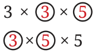
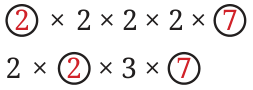
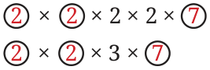

We now see how to make use of the observations made so far to find common factors and the Highest Common Factor (HCF). Example 1: Find the common factors, and the HCF of 45 and 75. Calculate the prime factorisation for both numbers:
\(45 = 3 \times 3 \times 5\)
\(75 = 3 \times 5 \times 5\)
We have seen: Factors of 45 are subparts of factors occurring in \(3 \times 3 \times 5\) and factors of 75 are subparts of factors occurring in \(3 \times 5 \times 5\). So the common factors should be subparts of both the factorisations. Can you write them down?
\(3 \times 3 \times 3 \times 5 \times\)

\(3 \times 5\)
3, 5, \(3 \times 5 = 15\) are subparts of both, and hence, they are the common factors along with 1. The highest among them is 15. So, their \(HCF = 15\). Example 2: Find the common factors, and the HCF of 112 and 84. Calculating prime factorisations, we get,
\(112 = 2 \times 2 \times 2 \times 2 \times 7\) and \(84 = 2 \times 2 \times 3 \times 7\).
Finding the common subparts, we get
\(2 \times 2 \times 2 \times 2 \times 7\)
\(2 \times 2 \times 3 \times 7\)
\(2 \times 2 \times 2 \times 2 \times\)
\(2 \times 2 \times 3 \times\)
\(\times 2 \times 7 2 \times 2 \times 3 \times 7\)

\(2 \times 7\)

\(2 \times 2 \times 7\)
The highest among the common factors, HCF, is \(2 \times 2 \times 7 = 28\). Example 3: Find the common factors and the HCF of 96 and 275. We have
\(96 = 2 \times 2 \times 2 \times 2 \times 2 \times 3\)
\(275 = 5 \times 5 \times 11\)
There is no subpart that is common amongst these two factorisations. So, 1 is the only common factor. It is also their HCF.